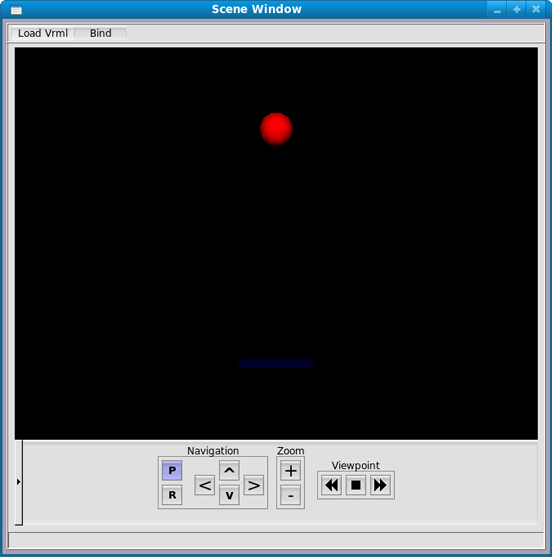
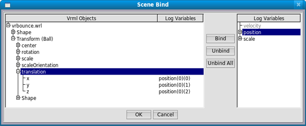
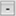

Benzetim sonuçlarýný üç boyutlu ortamda gösterilmesini saðlayan penceredir. 3B sahne penceresi, ana pencereden Windows menüsü altýndaki Scene Window'a týklanarak açýlýr.
3B sahneye VRML(Virtual Reality Modelling Language) 2.0 biçimindeki dosyalar yüklenebilir. Sahneye sadece VRML dosyasýnýn sadece görsel düðümleri yüklenebilir. Javascript, animasyon, doku ve ses desteði bulunmamaktadýr.
3B Sahne Penceresi iþlemler listesi:
- VRML dosyasý ekleme
- VRML dosyasý çýkarma
- VRML deðiþkenlerine kayýt deðiþkeni baðlanmasý
- Sahnede gezinme

Sahne penceresinden Load VRML menüsü altýndaki Add düðmesine týklanarak, istenilen vrml dosyasý seçilir.
Sahne penceresinden Load VRML menüsü altýndaki Remove düðmesine týklanýr. Açýlan diyalog penceresinden silinmesi istenen vrml dosyasý seçilir.
- Remove - Seçilen vrml dosyasýný sahneden kaldýrýr.
- Remove All - Bütün vrml dosyalarýný sahneden kaldýrýr.
- Cancel - Seçim iþlemini iptal eder.
Sahne penceresinden Bind düðmesine týklanýr. Açýlan diyalog penceresinde kayýt deðiþkenleri ve vrml deðiþkenleri listelenir. Vrml listesinden bir nesneye týklanýr, kayýt deðiþkeni listesinden uygun deðiþken seçilir.
- Bind - Seçilen vrml nesnesi ile seçilen kayýt deðiþkenini baðlar.
- Unbind - Seçilen vrml nesnesindeki baðý kopartýr.
- Unbind All - Bütün vrml nesnelerine baðlý kayýt deðiþkenlerini kopartýr.

Sahne penceresinin alt kýsmýnda yer alan düðme grubu ile sahnede gezinme, büyültme/küçültme iþlemleri yapýlabilir.
- Pan - Ok tuþlarýný kamerayý hareket ettirme moduna alýr.
 Rotate - Ok tuþlarýný kamerayý döndürme moduna alýr.
Rotate - Ok tuþlarýný kamerayý döndürme moduna alýr.-
 Zoom in- Sahnedeki nesneleri büyütür.
Zoom in- Sahnedeki nesneleri büyütür. -  Zoom out - Sahnedeki nesneleri küçültür.
 Previous viewpoint - Kamera vrml dosyasýndaki bir sonraki bakýþ noktasýna geçer.
Previous viewpoint - Kamera vrml dosyasýndaki bir sonraki bakýþ noktasýna geçer.- Reset viewpoint - Kamera vrml dosyasýndaki deðerlerine geri alýr.
 Next viewpoint - Kamera vrml dosyasýndaki bir önceki bakýþ noktasýna geçer.
Next viewpoint - Kamera vrml dosyasýndaki bir önceki bakýþ noktasýna geçer.